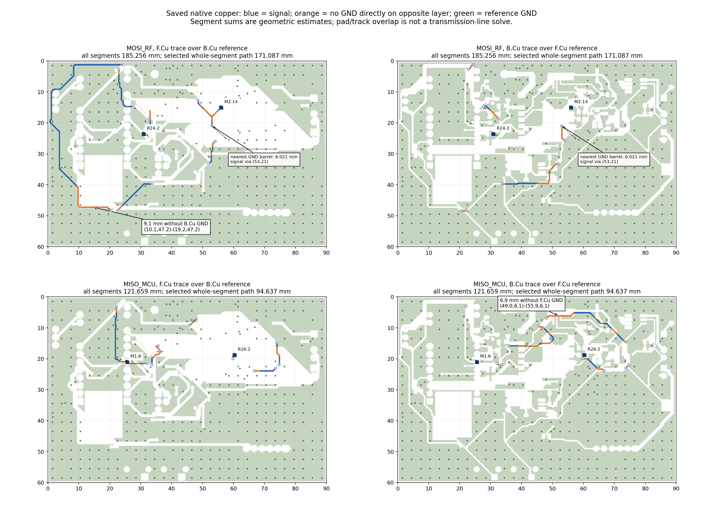
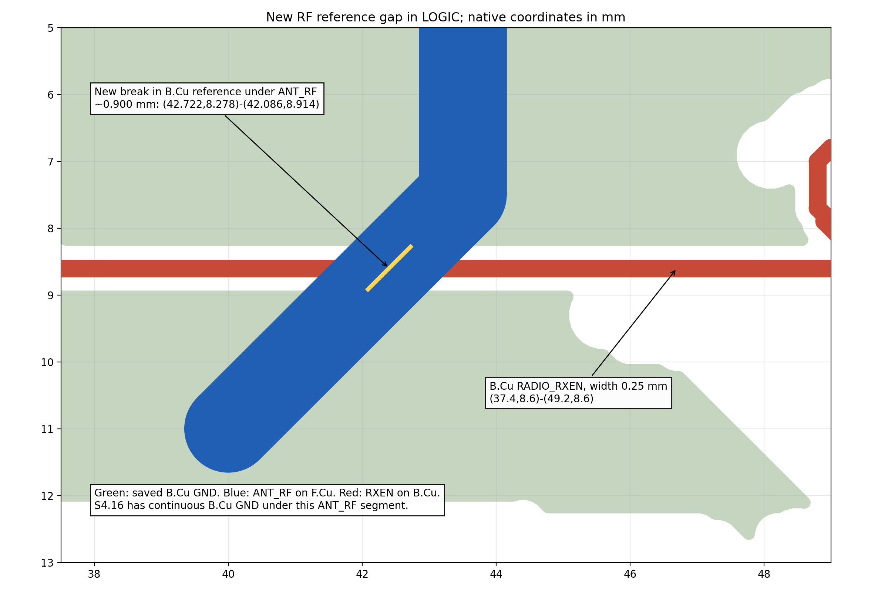

Независимый аудит Mesh Repeater 2.0
12 октября 2026 года · KiCad 10.0.6 · опубликованный коммит 547740fee937f891568f18485c7a6a3733c234c9
Формальная связность схем и плат подтверждена. Обнаружены новые недостатки трассировки верхней платы и комплектности документации. Их следует исправить до выпуска; согласованные электрические риски 1.0 остаются отдельными вопросами квалификации.
Три проверяющих не участвовали в проектировании и работали с сохранёнными native CAD, первичными источниками и собственными расчётами. Отдельно выполнены свежие ERC/DRC и сравнение с новым экспортом исходной S4.16. Старые PASS не служили самостоятельным доказательством. CAD, библиотеки, настройки и GitHub не изменены.
Полный аудит разводки · Расчёты и первичные даташиты · Механика и комплектность · Свежие ERC/DRC · Независимое сравнение схем · Сводные данные JSON
Новые замечания: 5
Высокий приоритет означает необходимость переработки или проверки, а не установленный стендовый отказ. Подробные предположения измерений и точные native ссылки находятся в профильных отчётах.
R1 · P2
Избыточные обходы MOSI/MISO и RESET, разрывы местной опорной земли
При тех же конечных площадках, что в S4.16, MOSI/MISO получили длинные обходы. Суммы целых выбранных сегментов около 171,1 / 94,6 мм против 33,7 / 35,6 мм в S4.16; это оценка графа, не точная длина пути внутри широких площадок. Вся медь соответствующих сетей — 185,3 / 121,7 мм, по 11 виа. Выбранный RESET вырос примерно с 53,0 до 102,4 мм. Под частями SPI нет земли противоположного слоя; у MOSI via (53; 21) ближайшая GND via находится в 6,02 мм. Функциональный отказ не установлен, но геометрическая регрессия подтверждена.
Предлагаемая правка: Освободить центральный коридор MCU ↔ модем, сократить обходы и переходы, оставить согласующие резисторы у источников, обеспечить непрерывную местную опору и соседние GND via. GPIO и функции сохранить. Проверить SPI/reset осциллографом после переразводки.
routing.md:15; routing_spi_evidence.png; LOGIC PCB:31401, UUID 55ba81aa-501c-4eb4-92b4-31b9ec08ed3e — 9,1 мм MOSI без B.Cu GND; LOGIC PCB:36008, UUID 0b63f05f-ccd6-4c91-8e44-5a6e65296761 — 6,9 мм MISO без F.Cu GND; LOGIC PCB:31878 — сигнальная via (53; 21)
R2 · P2
RADIO_RXEN разрывает B.Cu GND непосредственно под ANT_RF
Новая дорожка RXEN от (37,4; 8,6) до (49,2; 8,6) и её зазор прорезают нижнюю опорную медь под RF. Пробел по оси ANT_RF составляет около 0,900 мм; в S4.16 его не было. Боковая F.Cu земля остаётся, поэтому RF-возврат полностью не оборван. Изменение структуры и близкое цифровое пересечение подтверждены; величина RF/EMI-последствий не измерена.
Предлагаемая правка: Перенести RXEN вне проекции ANT_RF/ANT_SMA, восстановить сплошную B.Cu GND под RF и добавить правило, запрещающее цифровые трассы в этом коридоре без запрета GND-заливки. Повторить проверку сохранённой меди и RF-тракта.
routing.md:44; routing_rf_reference_gap.png; LOGIC PCB:35441, UUID e0e0ec38-fa6a-448a-a9bd-716f6f9b20c8 — RXEN; LOGIC PCB:33187, UUID 0a10c8ed-006d-451e-8ec3-774664bdfb11 — ANT_RF
M-01 · P2
BOM не содержит ответных кабельных частей новых угловых J3/J5
Один DS1022-1x40RUF11-B разрезается на J11/J3/J5, но это только платные вилки. Для J11 шунт отдельно указан, для J3 и J5 ни 4-контактные кабельные корпуса, ни гнездовые контакты/готовые кабели не перечислены. Поэтому по спискам 2.0 нельзя собрать и проверить все выбранные внешние соединения; конечный габарит и доступ с ответной частью также не определены.
Предлагаемая правка: При последующей правке добавить проверенные кабельные гнёзда/контакты либо конкретные готовые 1x4 кабели с количеством, применимостью ко всем трём вариантам, размером и схемой нумерации, затем проверить вставку и снятие в собранных этажах.
bom/DAN_NEW_PARTS.csv:5; bom/V2_COMPONENT_BOM.csv:134; bom/V2_COMPONENT_BOM.csv:136; docs/Mesh_repeater_v2_Codex_prompt_RU.txt:185
Координаты native, мм: {"J3": [86, 12, 0], "J5": [2.5, 18.12, 180]}
M-02 · P3
Упрощённая STEP кнопки не покрывает полный наружный размер скобы
Габарит локальной STEP по X составляет -3.83..3.83 =7.66мм. TE drawing задаёт 8.41мм для внешней скобы. Недостают 0.375мм с каждого края. Courtyard ±4.455мм верно учитывает настоящую ширину скобы, поэтому подтверждённого пересечения или ошибки отверстий здесь нет; ограничение относится к полноте визуальной/3D проверки.
Предлагаемая правка: При последующей правке использовать точную TE STEP либо консервативно расширить оболочку скобы до ±4.205мм, затем повторить геометрическую проверку. Сейчас не ссылаться на эту STEP как на полный реальный наружный контур скобы.
tools/cad/build_v2_mechanical_library.py:294; tools/cad/build_v2_mechanical_library.py:50; docs/mechanical_sources/SW1_TE.pdf, page1, front-view bracket width8.41mm; audit/independent_2026_10_12/mechanics.geometry.json, models.SW_TE_1825027_2_Side.step
Координаты native, мм: {"SW1": [29, 58.2, 180], "SW2": [41, 58.2, 180]}
DOC-01 · P3
BOM H1–H4: подпись NPTH против фактических отверстий PTH GND
Во всех трёх колонках номиналов H1–H4 осталось M3 NPTH, тогда как физические посадки, MPN и пояснения задают металлизированные отверстия с контактом GND. Нативная сверловка корректна; неоднозначность находится в тексте ведомости.
Предлагаемая правка: Переименовать значения H1–H4 во всех вариантах в M3 PTH GND, сохранив геометрию и признак «не закупать как компонент».
bom/V2_COMPONENT_BOM.csv:71–74; Physical_Package_Footprint = Meshcore:GND_M3_D3.2_OD6; native pad type = thru_hole
Открыть изображение
SPI: фактическая медь сохранённой LOGIC, маршруты MOSI/MISO и отсутствие местной опорной землиОткрыть изображение
RF: разрыв B.Cu GND под ANT_RF, образованный RADIO_RXENЧто подтверждено
| ERC обеих схем | 0 ошибок и предупреждений. Все уровни включены; отключённых проверок нет. |
|---|
| DRC POWER, LOGIC, SHIELD | 6 свежих прогонов: сохранённая заливка и перезаливка в памяти. Нарушений, неразведённых цепей и расхождений схемы/платы нет; платы не сохранялись. |
|---|
| Эквивалентность S4.16 → 2.0 | 435 сохранённых ref/pin, 102 группы в обоих вариантах графа; функциональных расхождений нет. Три варианта Value/Fit/MPN сохранены с документированными исключениями механики. SH1 удалена по принятому решению. |
|---|
| GPIO и прошивка | Физические pad→GPIO сопоставлены с официальными Nice!Nano/HT-RA62 и MeshCore commit a366955… . SDA P1.04, кнопка P1.00, GPS RX/TX P0.22/P0.20 — корректны для проверенного варианта. |
|---|
| J11 и межплатное соединение | 1/3/5/7 FILTER_OUT; 6 чётных GND; 9 BAT sense; 11 MODE. SYS_3V3 в кабеле отсутствует. Снятый J11 разделяет FILTER_OUT и SYS_3V3. |
|---|
| Физическая связность GND | Сохранённая медь, реальные площадки и переходы образуют один компонент GND на каждом этаже. Это проверка связности; она не отменяет обнаруженные разрывы опорной земли под отдельными сигналами. |
|---|
| Механика | Каждый элемент 90 × 60 мм, четыре крепления совпадают. J10 сохранён (35,7; 31,3), 0°. Зазоры к экрану 5,960 / 5,270 мм; минимум до стойки 1,4046 мм. Текущая приближённая CAD-сборка без кабеля 98 × 70,01 × 45,56 мм. |
|---|
| Документы и сохранность | 68 локальных ссылок существуют. Все 837 ранее отслеживаемых файлов побайтно неизменны. Исходная плата 1.0 совпадает с замороженной S4.16. |
|---|
Согласованные исходные риски
E-I1 · высокий электрический риск · принято в S4.16
Балансир LTO, R47/R51 = 2 Ом
Согласованный номинал не ограничивает ток катода LMV431A паспортным пределом. При низком расчётном пороге около 2,700 В идеализированная модель при ячейке 2,8 В требует около 50,4 мА. Это демонстрирует отсутствие гарантированного ограничения; фактический ток за пределами спецификации так не предсказывается.
Рекомендованный предел — 15 мА, абсолютный — 30 мА: даташит TI. Сохранение 2 Ом принято пользователем. Для будущего изменения нужны ограничение тока либо подходящий балансир; до этого — проверка тока и температуры на образце.
E-I2 · высокий электрический риск · унаследовано из S4.16
LTO при отсутствии или отключении батареи
Расчёт режима CN3722 без батареи даёт примерно 5,773 В типично и 5,978 В для верхнего угла при 25 °C. Рабочий предел TPS63802 — 5,5 В, абсолютный — 6 В. Запас делителя в обычном заряде не подтверждает этот отдельный режим.
Источники: CN3722 Rev1.2 и TPS63802. Пользователь выбрал делитель без отдельной защиты. Работа без батареи и её отключение остаются неквалифицированными; последующая схемная защита — отдельное изменение исходного решения.
Что требует собранного образца
- Полные размеры вставленных ответных частей, IDC-шлейфа и шунта J11; доступ руками/инструментом, полуповорот и прозвонка всех 12 жил 1:1, окончательная длина кабеля.
- Полезная глубина резьбы и отсутствие упора крепежа; фактический прижим и сопротивление контакта GND через стойки и шайбы.
- Питание конкретного Nice!Nano-клона от USB: аппаратное отключение зарядки, обратные токи, ток и нагрев штатного LDO.
- Минимальная эффективная ёмкость LC при 3,3 В, пуск и скачки нагрузки; одновременные осциллограммы MCU/модема, минимальный BAT и GPS.
- EMI/EMC, RF-тракт, SPI на выбранной частоте, RSSI/дальность. Средняя пластина после удаления SH1 не образует замкнутую металлическую клетку.
- Паспорта ячеек и панели, холодный Voc, индивидуальные пределы LTO, температура NTC относительно батареи, реальные пороги COLD, калибровка BAT_ADC и восстановление watchdog.
Сертификация EMC, фактический нагрев и устойчивость питания не установлены CAD-аудитом. Отсутствие ошибок DRC подтверждает геометрические правила проекта и не является доказательством этих характеристик.
Порядок последующей правки
Сначала освободить короткий коридор SPI MCU ↔ модем и вынести RXEN из-под RF-тракта, сохраняя GPIO и функции. Затем упростить избыточные участки, дополнить кабельные позиции J3/J5, исправить оболочку модели кнопок и неоднозначные обозначения крепёжных отверстий. После фактических изменений повторить затронутые проверки и пересоздать виды/экспорты с новыми хешами.
Пакет изготовления и публикация исправлений в рамках этого аудита не выполнялись. Исходная ветка 1.0, её тег v1.0 и отложенный заказ остаются в прежнем состоянии.
Исходная S4.16: cf54f9970e716272d477afdb252b4e195d595cb6. Все машинные данные и скрипты находятся рядом с отчётом. Проверка снимка: 837 файлов, изменений 0; SHA платы 1.0 742ae27bb1d13893f6dc368e5c67f5c41b35a3e6765331fc7e9871297d23dec6.